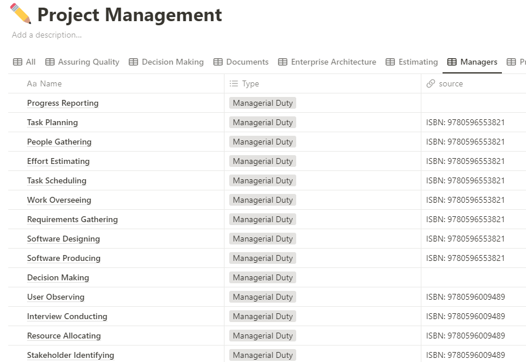
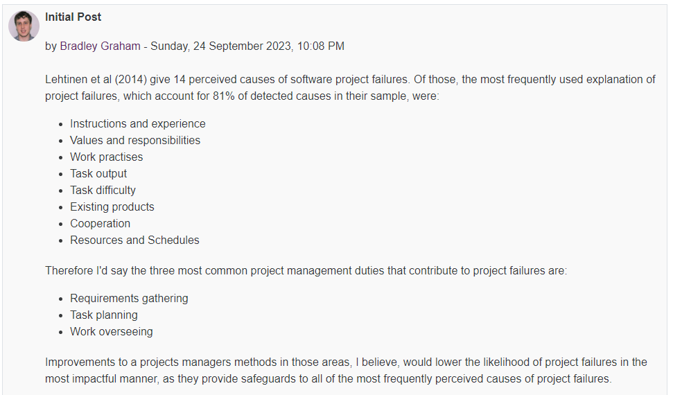
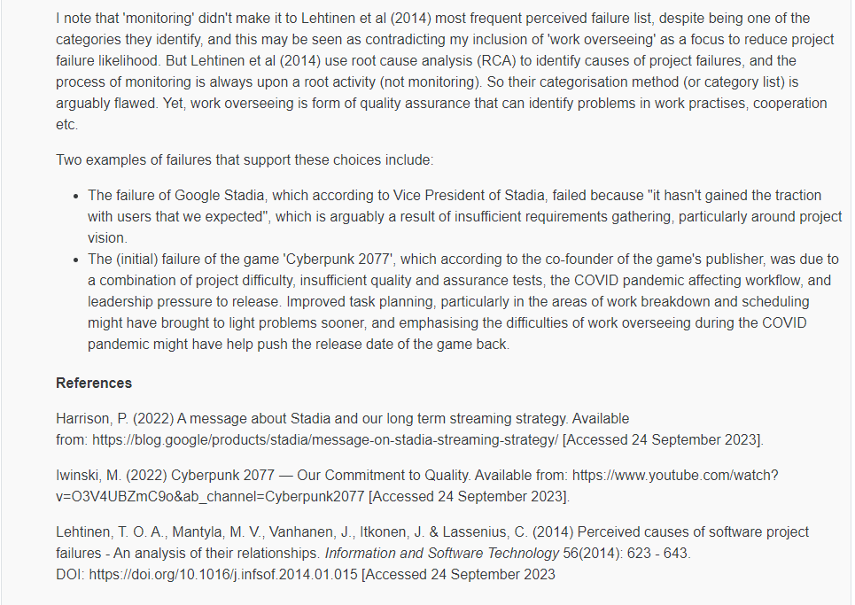
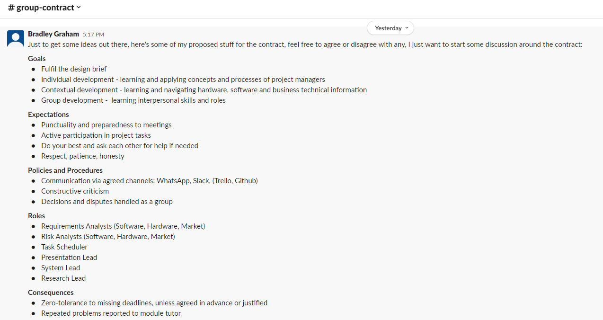
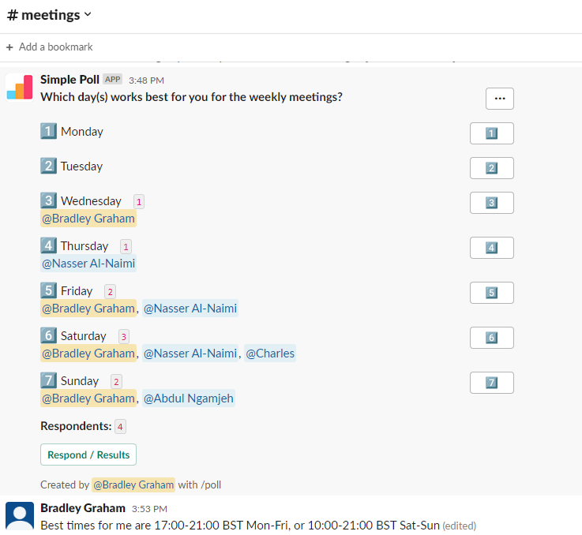

Week 1
Reading
The main reading of the week was chapters 1-6 of 'Applied software project management' textbook by Stellman, A. & Greene, J. (2008). In order to track the key ideas of this courses readings, I decided to use the software Notion.
Some of the new concepts, models and processes I was introduced to this week include the TOGAF enterprise architecture framework, specific duties of project managers, specific formats for project reviews, and specific document artefacts that are of value to project managers at different stages of a project. I found the overall style of Stellman and Greene fantastic for breaking down material into constituent, detailed parts and presenting processes as sequences; increasing accessibility of ideas. This capability is something I apsire to have, and I believe it's valuable for project managers who are required to communicate effectively.
Class Discussion
For a class discussion, we were tasked with reading Lehtinen et al (2014) paper titled 'Percieved causes of software project failures - An analysis of their relationships', available here, which lists 14 causes of project failures. We were then asked to choose what we believe to be the three biggest reasons projects fail, with two real life examples of project failures to support our argument.
 Group Project Setup
As preparation for a group project this module, I set up a Slack group group to situate group communication. I created topic specific channels to try and organise discussions that would take place, and get to know some of the stakeholders involved in this group project. The first tasks our group needed to do was to decide on meeting times and a group> contract. In order to help the group decide on a meeting time, I created a simple poll. These are useful for being able to both collect information, and present information to the group. They are also argued to reduce student anxieties and increase student engagement (Sun, 2014). That was valuable for our group's situation, as despite being prompted three days earlier with the idea of setting up a first meeting, it wasn't until the poll was made that most people provided some information about their availability. I also created an initial version of the group contract, as the group contract was due the end of the first week. Lastly, I pinned the project brief to one of the channels too for accessibility.
 